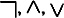
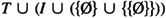

by Abraham Kandel
CRC Press, CRC Press LLC
ISBN: 084934297x Pub Date: 11/01/91
|
|
Fuzzy Expert Systems
by Abraham Kandel CRC Press, CRC Press LLC ISBN: 084934297x Pub Date: 11/01/91 |
| Previous | Table of Contents | Next |
A PL type is a relational type, i.e., a set of constant and relation symbols. Note that we are not using functions in PL.
Example 1: A PL Type
A PL type is {red, Suppliers, Parts, SP, PS, Family}. Here all relation symbols stand for binary relations. SP is the relationship between suppliers and parts and PS is a partnership relationship between suppliers. In what follows we shall use acronyms instead of full relation names. Reasoning about a very large data base of facts necessitates the use of many constant symbols, and a practical compromise is to accept any specially syntactically designated symbols as constants, without explicitly declaring them in the type. A relation symbol included in the type is called a base relation. The symbols in the language are those in the type, the equality relation symbol =, variable symbols denoting individual elements, the logical symbols (, →, ↔, ∀, ∃), and parentheses. We may also use new relation symbols (not in the type) to denote auxiliary relations. A term in PL is either a constant symbol or a variable. Formulas in PL are only those of FOPC.
Example 2: PL Formulas
Consider a data base with the type given in preceding Example 1:
A structure in FOPC may be viewed as a model of the relevant aspects of the world. It is composed of two components: the extension, the model universe and its organization, and the intention, the correspondence between object names and objects in the model extension. An alternative modeling tool is the Kripke structures, often used in modal logic. The main difference of concern to us between Kripke and FOPC is that the former uses a single structure whereas the latter uses a set of “FOPC-like” structures to model each state of the world. The “extra” structures are used in interpreting a formula of probability values as the number of worlds in which it is satisfied divided by the total number of possible worlds. Kripke structures may be used in the future for PL modeling, but the present work is based on FOPC.
The main differences between FOPC structures and PL models are
Let T be a type. Let I be a set of implication formulas (i.e., formulas whose most external connective is implication). A probabilistic model S of probabilistic type T is a function with domain  so that:
Models will be denoted by bold capital letters. Finite models are those models whose universe is finite. The support of a probabilistic relation R is the set of tuples whose probability of membership in R is not zero. For safety, we are considering only finite models, or models where all the relations have a finite support.
Remarks
First, note that the probability assignment is a partial function; it is possible for our knowledge of the world to be partial and it is possible to express ignorance in PL simply by failing to specify unknown information (this is in contradiction to the closed world assumption,13 which, paraphrased, states that anything not explicitly expressed is false). As a consequence, summation in PL of the probabilities over all known possibilities may be <1. An alternative formalism is to make the probability function assign a special value, ⊥ (bottom, or unknown) in case a value is unknown. ⊥ is considered to be smaller than any value in [0,1] (this order corresponds to “less known,” for future “higher orders” corrections to be probabilities), and its multiplication with any number in [0,1] gives ⊥. Second, as our real experts are human beings, we do not have complete knowledge of probabilities of all implications. In many cases it is impractical to specify, in the model definition, all these probabilities, even if known. Therefore, we under-specify model definitions, and assign probabilities only to implications seemed relevant to the problem at hand.
| Previous | Table of Contents | Next |